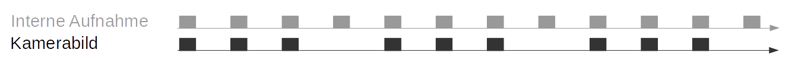

Stereokamera¶
Das Stereokamera-Modul beinhaltet Funktionen zur Erfassung von Stereo-Bildpaaren und zur planaren Rektifizierung, die nötig ist, um die Stereokamera als Messinstrument nutzen zu können.
Bilderfassung¶
Die Erfassung von Stereo-Bildpaaren ist der erste Schritt zur Stereovision. Da beide Kameras über Global Shutter verfügen und die Kamerachips per Hardware synchronisiert sind, werden alle Pixel beider Kameras immer zum exakt gleichen Zeitpunkt belichtet. Der Zeitpunkt in der Mitte der Bildbelichtung wird den Bildern als Zeitstempel angeheftet. Dieser Zeitstempel ist für dynamische Anwendungen wichtig, bei denen sich die Kamera oder die Szene bewegt.
Bemerkung
Zusätzlich wird die Belichtungszeitspanne mittels des GPIO-Ausgangs 1 des rc_visard signalisiert.
Die Belichtungszeit lässt sich manuell auf einen festen Wert einstellen. Dies ist hilfreich in Umgebungen, in denen die Beleuchtung gesteuert werden kann, da die Lichtintensität so in allen Bildern gleich ist. Die Kamera ist standardmäßig auf automatische Belichtung eingestellt. In diesem Modus wird die Belichtungszeit automatisch, bis zu einem benutzerdefinierten Höchstwert, gewählt. Mit dem zulässigen Höchstwert soll eine mögliche Bewegungsunschärfe begrenzt werden: Hierzu kommt es, wenn Aufnahmen gemacht werden, während sich die Kamera oder die Szene bewegt. Die maximale Belichtungszeit hängt also von der Anwendung ab. Ist die maximale Belichtungszeit erreicht, nutzt der Algorithmus eine Verstärkung (Gain), um die Bildhelligkeit zu erhöhen. Höhere Gain-Faktoren verstärken jedoch auch das Bildrauschen. Es gilt daher, die maximale Belichtungszeit bei schwacher Beleuchtung so zu wählen, dass ein guter Kompromiss zwischen Bewegungsunschärfe und Bildrauschen erzielt wird.
Planare Rektifizierung¶
Kameraparameter, wie die Brennweite, die Objektivverzeichnung und die Stellung der Kameras zueinander, müssen genau bekannt sein, damit die Stereokamera als Messinstrument eingesetzt werden kann. Der rc_visard ist bereits ab Werk kalibriert und benötigt in der Regel keine Neukalibrierung. Die Kameraparameter beschreiben mit großer Präzision alle geometrischen Eigenschaften des Stereokamera-Systems, aber das daraus resultierende Modell ist komplex und kompliziert zu benutzen.
Rektifizierung bezeichnet den Prozess, Bilder auf Grundlage eines idealen Stereokamera-Modells zu reprojizieren. Dabei wird die Objektivverzeichnung korrigiert und die Bilder werden so ausgerichtet, dass ein Objektpunkt in beiden Aufnahmen immer auf die gleiche Bildzeile projiziert wird. Die Sichtachsen der Kameras liegen genau parallel zueinander. Dies bedeutet, dass Objektpunkte in unendlicher Distanz in beiden Aufnahmen auf die gleiche Bildspalte projiziert werden. Je näher ein Objektpunkt liegt, desto größer ist der Unterschied zwischen den Bildspalten im rechten und linken Bild. Dieser Unterschied wird Disparität genannt.
Mathematisch lässt sich die Projektion des Objektpunkts \(P=(P_x, P_y, P_z)\) auf den Bildpunkt \(p_l=(p_{lx}, p_{ly}, 1)\) im linken rektifizierten Bild und auf den Bildpunkt \(p_r=(p_{rx}, p_{ry}, 1)\) im rechten rektifizierten Bild wie folgt darstellen:
Die Brennweite \(f\) ist der Abstand zwischen der gemeinsamen Bildebene und den optischen Zentren der linken und rechten Kamera. Sie wird in Pixeln gemessen. Als Basisabstand \(t\) wird der Abstand zwischen den optischen Zentren beider Kameras bezeichnet. Auch die Bildbreite \(w\) und Bildhöhe \(h\) werden in Pixeln gemessen. \(s_1\) und \(s_2\) sind Skalierungsfaktoren, die sicherstellen, dass die dritten Koordinaten der Bildpunkte \(p_l\) und \(p_r\) 1 entsprechen.
Bemerkung
Der rc_visard stellt über seine verschiedenen Schnittstellen einen Brennweitenfaktor bereit. Er bezieht sich auf die Bildbreite, um verschiedene Bildauflösungen zu unterstützen. Die Brennweite \(f\) in Pixeln lässt sich leicht bestimmen, indem der Brennweitenfaktor mit der Bildbreite (in Pixeln) multipliziert wird.
Zugriff auf die Kamerabilder¶
Der rc_visard bietet über die GenICam-Schnittstelle zeitgestempelte rektifizierte Bilder der linken und rechten Kamera (siehe Verfügbare Bild-Streams). Live-Streams in geringerer Qualität werden in der Web GUI bereitgestellt.
Die Web GUI bietet weiterhin die Möglichkeit, einen Schnappschuss der aktuellen Szene als .tar.gz-Datei zu speichern. Dazu dient das Kamerasymbol unterhalb der Live-Streams auf der Seite Kamera. Dieser Schnappschuss beinhaltet:
- die rektifizierten linken und rechten Kamerabilder in voller Auflösung als .png-Dateien,
- eine Kameraparameter-Datei mit Kameramatrix, Bildabmessungen, Belichtungszeit, Verstärkungsfaktor und Basisabstand der Kameras.
- die aktuellen IMU-Messungen als imu.csv-Datei,
- eine nodes.json-Datei mit Informationen aller Module auf dem rc_visard,
- eine system_info.json-Datei mit Systeminformationen des rc_visard.
Parameter¶
Das Stereokamera-Modul wird als rc_stereocamera bezeichnet und in der Web GUI auf der Seite Kamera dargestellt. Der Benutzer kann die Kamera-Parameter entweder dort oder direkt über die REST-API (REST-API-Schnittstelle) oder GigE Vision (GigE Vision 2.0/GenICam-Schnittstelle) ändern.
Bemerkung
Wird der rc_visard über GigE Vision genutzt, können die Kamera-Parameter nicht über die Web GUI oder REST-API geändert werden.
Übersicht über die Parameter¶
Dieses Softwaremodul bietet folgende Laufzeitparameter:
| Name | Typ | Min. | Max. | Default | Beschreibung |
|---|---|---|---|---|---|
exp_auto |
bool | false | true | true | Umschalten zwischen automatischer und manueller Belichtung |
exp_auto_average_max |
float64 | 0.0 | 1.0 | 0.75 | Maximaler Belichtungsmittelwert, wenn exp_auto auf true gesetzt ist |
exp_auto_average_min |
float64 | 0.0 | 1.0 | 0.25 | Maximaler Belichtungsmittelwert , wenn exp_auto auf true gesetzt ist |
exp_auto_mode |
string | - | - | Normal | Modus für automatische Belichtung, Normal, Out1High oder AdaptiveOut1 |
exp_height |
int32 | 0 | 959 | 0 | Höhe der Region für automatische Belichtung, 0 für das ganze Bild |
exp_max |
float64 | 6.6e-05 | 0.018 | 0.018 | Maximale Belichtungszeit in Sekunden, wenn exp_auto auf true gesetzt ist |
exp_offset_x |
int32 | 0 | 1279 | 0 | Erste Spalte der Region für automatische Belichtung |
exp_offset_y |
int32 | 0 | 959 | 0 | Erste Zeile der Region für automatische Belichtung |
exp_value |
float64 | 6.6e-05 | 0.018 | 0.005 | Maximale Belichtungszeit in Sekunden, wenn exp_auto auf false gesetzt ist |
exp_width |
int32 | 0 | 1279 | 0 | Breite der Region für automatische Belichtung, 0 für das ganze Bild |
fps |
float64 | 1.0 | 25.0 | 25.0 | Bildwiederholrate in Hertz |
gain_value |
float64 | 0.0 | 18.0 | 0.0 | Manuelle Verstärkung in Dezibel, wenn exp_auto auf false gesetzt ist |
wb_auto |
bool | false | true | true | Ein- und Ausschalten des manuellen Weißabgleichs (nur für Farbkameras) |
wb_ratio_blue |
float64 | 0.125 | 8.0 | 2.4 | Blau-zu-Grün-Verhältnis, falls wb_auto auf false gesetzt ist (nur für Farbkameras) |
wb_ratio_red |
float64 | 0.125 | 8.0 | 1.2 | Rot-zu-Grün-Verhältnis, falls wb_auto auf false gesetzt ist (nur für Farbkameras) |
Beschreibung der Laufzeitparameter¶
{kind=link}
fps(Bildwiederholrate)Dieser Wert bezeichnet die Bildwiederholrate der Kamera in Bildern pro Sekunde und begrenzt zugleich die Frequenz, mit der Tiefenbilder berechnet werden können. Die Bildwiederholrate entspricht auch der Frequenz, mit welcher der rc_visard Bilder über GigE Vision bereitstellt. Wird diese Frequenz verringert, reduziert sich auch die zur Übertragung der Bilder benötigte Bandbreite des Netzwerks.
Die Kamera läuft immer mit 25 Hz, um die Funktion von internen Modulen, die eine konstante Bildwiederholrate benötigen (wie zum Beispiel die visuelle Odometrie), sicherzustellen. Die vom Benutzer definierte Bildwiederholrate wird, wie in Abbildung Abb. 21 gezeigt, durch das Weglassen von Bildern erreicht, die für das Stereo-Matching und das Übertragen per GigE Vision benutzt werden. Letzteres dient der Reduktion der Bandbreite.
Abb. 21 Die interne Bildaufnahme geschieht immer mit 25 Hz. Der
fpsParameter bestimmt, wie viele dieser Kamerabilder per GigE Vision versendet werden.
{kind=link}
exp_auto(Belichtungszeit Auto oder Manuell)- Dieser Wert lässt sich für den automatischen Belichtungsmodus auf true und für den manuellen Belichtungsmodus auf false setzen. Im manuellen Belichtungsmodus wird die gewählte Belichtungszeit konstant gehalten und die Verstärkung bleibt bei 0,0 dB, auch wenn die Bilder über- oder unterbelichtet sind. Im automatischen Belichtungsmodus werden die Belichtungszeit und der Verstärkungsfaktor automatisch angepasst, sodass das Bild korrekt belichtet wird. Wenn die Automatik abgeschaltet wird, werden
exp_valueundgain_valueauf die letzten von der Automatik ermittelten Werte für Belichtungszeit und Verstärkung gesetzt.
exp_auto_mode(Modus Belichtungsautomatik)Der Modus für automatische Belichtung kann auf Normal, Out1High oder AdaptiveOut1 gesetzt werden. Diese Modi sind nur relevant, wenn der rc_visard mit einer externen Lichtquelle oder einem Projektor betrieben wird, der an den GPIO-Ausgang 1 des rc_visard angeschlossen ist. Dieser Ausgang kann durch das optionale IOControl-Modul (IOControl und Projektor-Kontrolle) gesteuert werden.
Normal: Alle Bilder werden für die Regelung der Belichtungszeit in Betracht gezogen, außer wenn der IOControl-Modus für den GPIO-Ausgang 1 ExposureAlternateActive ist: Dann werden nur Bilder berücksichtigt, bei denen GPIO-Ausgang 1 HIGH ist, da diese Bilder heller sein können, falls dieser GPIO-Ausgang benutzt wird um einen externen Projektor auszulösen.
Out1High: Die Belichtungszeit wird nur anhand der Bilder mit GPIO-Ausgang 1 HIGH angepasst. Bilder bei denen GPIO-Ausgang 1 LOW ist, werden für die Belichtungszeitregelung nicht berücksichtigt. Das bedeutet, die Belichtungszeit ändert sich nicht, solange nur Bilder mit GPIO-Ausgang 1 LOW aufgenommen werden. Dieser Modus wird für die Benutzung mit dem Single+Out1 Tiefenbild Aufnahmemodus und externem Projektor empfohlen, wenn die Helligkeit der Szene nur zu den Zeitpunkten berücksichtigt werden soll, wenn GPIO-Ausgang 1 HIGH ist. Das ist zum Beispiel der Fall, wenn kurz vor einer Objekterkennung ein heller Teil des Roboters durch das Bild fährt, der die Belichtungseinstellungen jedoch nicht beeinflussen soll.
AdaptiveOut1: Dieser Modus nutzt alle Kamerabilder und speichert die Differenz der Belichtung zwischen Bildern mit GPIO Ausgang 1 HIGH und LOW. Während der IOControl-Modus für GPIO-Ausgang 1 LOW ist, werden die Bilder um diese Differenz unterbelichtet, um eine Überbelichtung zu verhindern, sobald der externe Projektor über GPIO-Ausgang 1 ausgelöst wird. Die Differenz der Belichtung wird als Out1 Reduktion unter den Livebildern angezeigt. Dieser Modus wird empfohlen, wenn im Stereo-Matching-Modul der Parameter
acquisition_modeaufSingleFrameOut1(Einzelbild+Out1) gesetzt ist (Parameter des Stereo-Matching-Moduls), und ein externer Projektor an den GPIO-Ausgang 1 angeschlossen ist, und wenn die Helligkeit der Szene zu jeder Zeit zur Belichtungszeitregelung berücksichtigt werden soll.Das ist zum Beispiel in Anwendungen mit veränderlichen äußeren Lichtbedingungen der Fall.
exp_max(Maximale Belichtungszeit)- Dieser Wert gibt die maximale Belichtungszeit im automatischen Modus in Sekunden an. Die tatsächliche Belichtungszeit wird automatisch angepasst, sodass das Bild korrekt belichtet wird. Sind die Bilder trotz maximaler Belichtungszeit noch immer unterbelichtet, erhöht der rc_visard schrittweise die Verstärkung, um die Helligkeit der Bilder zu erhöhen. Es ist sinnvoll, die Belichtungszeit zu begrenzen, um die bei schnellen Bewegungen auftretende Bildunschärfe zu vermeiden oder zu verringern. Jedoch führt eine höhere Verstärkung auch zu mehr Bildrauschen. Welcher Kompromiss der beste ist, hängt immer auch von der Anwendung ab.
exp_auto_average_max(Maximale Helligkeit) undexp_auto_average_min(Minimale Helligkeit)Die automatische Belichtungszeitsteuerung versucht die Belichtungszeit und den Verstärkungsfaktor so einzustellen, dass die mittlere Bildhelligkeit im Bild oder im Bereich zur Regelung zwischen der maximalen und minimalen Helligkeit liegt. Die maximale Helligkeit wird benutzt, wenn keine Bildteile in der Sättigung sind, d.h. keine Überbelichtung durch helle Oberflächen oder Reflexionen vorhanden sind. Falls Sättigungen auftreten, werden die Belichtungszeit und der Verstärkungsfaktor verringert, aber nur bis zur eingestellten minimalen Helligkeit.
Der Parameter für die maximale Helligkeit hat Vorrang über den Parameter der minimalen Helligkeit. Falls die minimale Helligkeit größer als die maximale ist, versucht die automatische Belichtungszeitsteuerung die mittlere Bildhelligkeit auf die maximale Helligkeit zu setzen.
Die aktuelle Helligkeit wird in der Statuszeile unter den Bildern angezeigt.
exp_offset_x,exp_offset_y,exp_width,exp_height(Bereich zur Regelung)Diese Werte definieren eine rechteckige Region im linken rektifizierten Bild, um den von der automatischen Belichtung überwachten Bereich zu limitieren. Die Belichtungszeit und der Verstärkungsfaktor werden so gewählt, dass die definierte Region optimal belichtet wird. Dies kann zu Über- oder Unterbelichtung in anderen Bildbereichen führen. Falls die Breite oder Höhe auf 0 gesetzt werden, dann wird das gesamte linke und rechte Bild von der automatischen Belichtungsfunktion berücksichtigt. Dies ist die Standardeinstellung.
Die Region wird in der Web GUI mit einem Rechteck im linken rektifizierten Bild visualisiert. Sie kann über Slider oder direkt im Bild mithilfe der Schaltfläche
Bereich im Bild auswählenverändert werden.exp_value(Belichtungszeit)- Dieser Wert gibt die Belichtungszeit im manuellen Modus in Sekunden an. Diese Belichtungszeit wird konstant gehalten, auch wenn die Bilder unterbelichtet sind.
gain_value(Verstärkungsfaktor)- Dieser Wert gibt den Verstärkungsfaktor im manuellen Modus in Dezibel an. Höhere Verstärkungswerte reduzieren die Belichtungszeit, führen aber zu Rauschen.
wb_auto(Weißabgleich Auto oder Manuell)- Dieser Wert kann auf true gesetzt werden, um den automatischen Weißabgleich anzuschalten. Bei false kann das Verhältnis der Farben manuell mit
wb_ratio_redundwb_ratio_bluegesetzt werden.wb_ratio_redundwb_ratio_bluewerden auf die letzten von der Automatik ermittelten Werte gesetzt, wenn diese abgeschaltet wird. Der Weißabgleich ist bei monochromen Kameras ohne Funktion und wird in diesem Fall in der Web GUI nicht angezeigt.
wb_ratio_blueundwb_ratio_red(Blau | Grün and Rot | Grün)- Mit diesen Werten kann das Verhältnis von Blau zu Grün bzw. Rot zu Grün für einen manuellen Weißabgleich gesetzt werden. Der Weißabgleich ist bei monochromen Kameras ohne Funktion und wird in diesem Fall in der Web GUI nicht angezeigt.
Die gleichen Parameter sind – mit leicht abweichenden Namen und teilweise mit anderen Einheiten oder Datentypen – auch über die GenICam-Schnittstelle verfügbar (siehe GigE Vision 2.0/GenICam-Schnittstelle).
Statuswerte¶
Dieses Modul meldet folgende Statuswerte:
| Name | Beschreibung |
|---|---|
out1_reduction |
Anteil der Helligkeits-Reduktion (0.0 - 1.0) für Bilder mit GPIO-Ausgang 1=LOW, wenn exp_auto_mode=AdaptiveOut1 oder exp_auto_mode=Out1High |
baseline |
Basisabstand \(t\) der Stereokamera in Metern |
brightness |
Aktuelle Helligkeit als Wert zwischen 0 und 1 |
color |
0 für monochrome Kameras, 1 für Farbkameras |
exp |
Tatsächliche Belichtungszeit in Sekunden. Dieser Wert wird unter der Bildvorschau in der Web GUI als Belichtungszeit (ms) angezeigt. |
focal |
Brennweitenfaktor, normalisiert auf eine Bildbreite von 1 |
fps |
Tatsächliche Bildwiederholrate der Kamerabilder in Hertz. Dieser Wert wird unter der Bildvorschau in der Web GUI als Bildwiederholrate (Hz) angezeigt. |
gain |
Tatsächlicher Verstärkungsfaktor in Dezibel. Dieser Wert wird unter der Bildvorschau in der Web GUI als Verstärkung (dB) angezeigt. |
height |
Höhe des Kamerabildes in Pixeln |
temp_left |
Temperatur des linken Kamerasensors in Grad Celsius |
temp_right |
Temperatur des rechten Kamerasensors in Grad Celsius |
test |
0 for Live-Bilder und 1 für Test-Bilder |
time |
Verarbeitungszeit für die Bilderfassung in Sekunden |
width |
Breite des Kamerabildes in Pixeln |
Services¶
Das Stereokamera-Modul bietet folgende Services, um Parametereinstellungen zu speichern bzw. wiederherzustellen.
save_parameters¶
Bei Aufruf dieses Services werden die aktuellen Parametereinstellungen des Stereokamera-Moduls auf dem rc_visard gespeichert. Das bedeutet, dass diese Werte selbst nach einem Neustart angewandt werden.
Dieser Service hat keine Argumente.
Die Definition der Response mit jeweiligen Datentypen ist:
{ "return_code": { "message": "string", "value": "int16" } }
reset_defaults¶
Hiermit werden die Werkseinstellungen der Parameter dieses Moduls wiederhergestellt und angewandt („factory reset“).
Warnung
Durch den Aufruf dieses Services gehen die aktuellen Parametereinstellungen für das Stereokamera-Modul unwiderruflich verloren.
Dieser Service hat keine Argumente.
Die Definition der Response mit jeweiligen Datentypen ist:
{ "return_code": { "message": "string", "value": "int16" } }